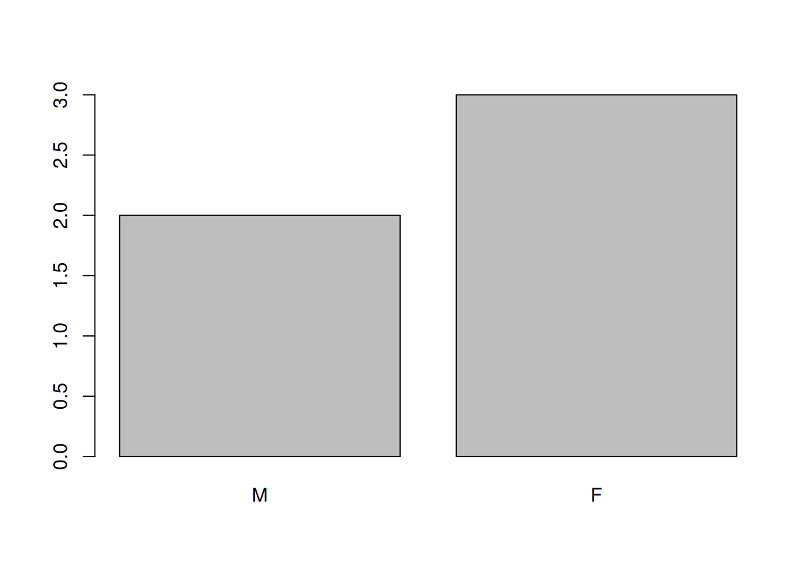

Chapter 4 Starting with data
Learning Objectives
- Describe what a data frame is.
- Load external data from a .csv file into a data frame.
- Summarize the contents of a data frame.
- Describe what a factor is.
- Convert between strings and factors.
- Reorder and rename factors.
- Format dates.
- Other R objects: matrices and lists
- Export and save data.
4.1 Presentation of the gene expression data
We are going to use part of the data published by Blackmore et al. (2017), The effect of upper-respiratory infection on transcriptomic changes in the CNS. The goal of the study was to determine the effect of an upper-respiratory infection on changes in RNA transcription occuring in the cerebellum and spinal cord post infection. Gender matched eight week old C57BL/6 mice were inoculated saline or with Influenza A by intranasal route and transcriptomic changes in the cerebellum and spinal cord tissues were evaluated by RNA-seq at days 0 (non-infected), 4 and 8.
The dataset is stored as a comma separated value (CSV) file. Each row holds information for a single RNA expression measurement, and the columns represent:
| Column | Description |
|---|---|
| gene | The name of the gene that was measured |
| sample | The name of the sample the gene expression was measured in |
| expression | The value of the gene expression |
| organism | The organism/species - here all data stem from mice |
| age | The age of the mouse (all mice were 8 weeks here) |
| sex | The sex of the mouse |
| infection | The infection state of the mouse, i.e. infected with Influenza A or not infected. |
| strain | The Influenza A strain; C57BL/6 in all cases. |
| time | The duration of the infection (in days). |
| tissue | The tissue that was used for the gene expression experiment, i.e. cerebellum or spinal cord. |
| mouse | The mouse unique identifier. |
| ENTREZID | The gene ID for the ENTREZ database |
| product | The gene product |
| ensembl_gene_id | The ID of the gene from the ENSEMBL database |
| external_synonym | A name synonym for the gene |
| chromosome_name | The chromosome name of the gene |
| gene_biotype | The gene biotype |
| phenotype_description | The phenotype description of the gene |
| hsapiens_homolog_associated_gene_name | The human homologous gene |
We are going to use the R function download.file() to download the
CSV file that contains the gene expression data, and we will use
read.csv() to load into memory the content of the CSV file as an
object of class data.frame. Inside the download.file command, the
first entry is a character string with the source URL. This source URL
downloads a CSV file from a GitHub repository. The text after the
comma ("data/rnaseq.csv") is the destination of the file on your
local machine. You’ll need to have a folder on your machine called
"data" where you’ll download the file. So this command downloads the
remote file, names it "rnaseq.csv" and adds it to a preexisting
folder named "data".
download.file(url = "https://github.com/Bioconductor/bioconductor-teaching/raw/master/data/GSE96870/rnaseq.csv",
destfile = "data/rnaseq.csv")Alternatively, you can download the file manually and move it in the data directory in your RStudio project. This approach however has the drawback of loosing the provenance of the data.
You are now ready to load the data:
rna <- read.csv("data/rnaseq.csv")This statement doesn’t produce any output because, as you might recall, assignments don’t display anything. If we want to check that our data has been loaded, we can see the contents of the data frame by typing its name:
rnaWow… that was a lot of output. At least it means the data loaded
properly. Let’s check the top (the first 6 lines) of this data frame
using the function head():
head(rna)## gene sample expression organism age sex infection strain time
## 1 Asl GSM2545336 1170 Mus musculus 8 Female InfluenzaA C57BL/6 8
## 2 Apod GSM2545336 36194 Mus musculus 8 Female InfluenzaA C57BL/6 8
## 3 Cyp2d22 GSM2545336 4060 Mus musculus 8 Female InfluenzaA C57BL/6 8
## 4 Klk6 GSM2545336 287 Mus musculus 8 Female InfluenzaA C57BL/6 8
## 5 Fcrls GSM2545336 85 Mus musculus 8 Female InfluenzaA C57BL/6 8
## tissue mouse ENTREZID
## 1 Cerebellum 14 109900
## 2 Cerebellum 14 11815
## 3 Cerebellum 14 56448
## 4 Cerebellum 14 19144
## 5 Cerebellum 14 80891
## product
## 1 argininosuccinate lyase, transcript variant X1
## 2 apolipoprotein D, transcript variant 3
## 3 cytochrome P450, family 2, subfamily d, polypeptide 22, transcript variant 2
## 4 kallikrein related-peptidase 6, transcript variant 2
## 5 Fc receptor-like S, scavenger receptor, transcript variant X1
## ensembl_gene_id external_synonym chromosome_name gene_biotype
## 1 ENSMUSG00000025533 2510006M18Rik 5 protein_coding
## 2 ENSMUSG00000022548 <NA> 16 protein_coding
## 3 ENSMUSG00000061740 2D22 15 protein_coding
## 4 ENSMUSG00000050063 Bssp 7 protein_coding
## 5 ENSMUSG00000015852 2810439C17Rik 3 protein_coding
## phenotype_description
## 1 abnormal circulating amino acid level
## 2 abnormal lipid homeostasis
## 3 abnormal skin morphology
## 4 abnormal cytokine level
## 5 decreased CD8-positive alpha-beta T cell number
## hsapiens_homolog_associated_gene_name
## 1 ASL
## 2 APOD
## 3 CYP2D6
## 4 KLK6
## 5 FCRL2
## [ reached 'max' / getOption("max.print") -- omitted 1 rows ]## Try also
## View(rna)Note
read.csv() assumes that fields are delineated by commas, however, in
several countries, the comma is used as a decimal separator and the
semicolon (;) is used as a field delineator. If you want to read in
this type of files in R, you can use the read.csv2() function. It
behaves exactly like read.csv() but uses different parameters for
the decimal and the field separators. If you are working with another
format, they can be both specified by the user. Check out the help for
read.csv() by typing ?read.csv to learn more. There is also the
read.delim() for in tab separated data files. It is important to
note that all of these functions are actually wrapper functions for
the main read.table() function with different arguments. As such,
the data above could have also been loaded by using read.table()
with the separation argument as ,. The code is as follows:
rna <- read.table(file = "data/rnaseq.csv",
sep = ",", quote = "\"",
header = TRUE)The header argument has to be set to TRUE to be able to read the
headers as by default read.table() has the header argument set to
FALSE. The quote argument has to be set to "\"" to only allow " as a
quoting character (see how the product variable for gene Rtca in
rnaseq.csv is written).
4.2 What are data frames?
Data frames are the de facto data structure for most tabular data, and what we use for statistics and plotting.
A data frame can be created by hand, but most commonly they are
generated by the functions read.csv() or read.table(); in other
words, when importing spreadsheets from your hard drive (or the web).
A data frame is the representation of data in the format of a table where the columns are vectors that all have the same length. Because columns are vectors, each column must contain a single type of data (e.g., characters, integers, factors). For example, here is a figure depicting a data frame comprising a numeric, a character, and a logical vector.

We can see this when inspecting the structure of a data frame
with the function str():
str(rna)## 'data.frame': 32428 obs. of 19 variables:
## $ gene : chr "Asl" "Apod" "Cyp2d22" "Klk6" ...
## $ sample : chr "GSM2545336" "GSM2545336" "GSM2545336" "GSM2545336" ...
## $ expression : int 1170 36194 4060 287 85 782 1619 288 43217 1071 ...
## $ organism : chr "Mus musculus" "Mus musculus" "Mus musculus" "Mus musculus" ...
## $ age : int 8 8 8 8 8 8 8 8 8 8 ...
## $ sex : chr "Female" "Female" "Female" "Female" ...
## $ infection : chr "InfluenzaA" "InfluenzaA" "InfluenzaA" "InfluenzaA" ...
## $ strain : chr "C57BL/6" "C57BL/6" "C57BL/6" "C57BL/6" ...
## $ time : int 8 8 8 8 8 8 8 8 8 8 ...
## $ tissue : chr "Cerebellum" "Cerebellum" "Cerebellum" "Cerebellum" ...
## $ mouse : int 14 14 14 14 14 14 14 14 14 14 ...
## $ ENTREZID : int 109900 11815 56448 19144 80891 20528 97827 118454 18823 14696 ...
## $ product : chr "argininosuccinate lyase, transcript variant X1" "apolipoprotein D, transcript variant 3" "cytochrome P450, family 2, subfamily d, polypeptide 22, transcript variant 2" "kallikrein related-peptidase 6, transcript variant 2" ...
## $ ensembl_gene_id : chr "ENSMUSG00000025533" "ENSMUSG00000022548" "ENSMUSG00000061740" "ENSMUSG00000050063" ...
## $ external_synonym : chr "2510006M18Rik" NA "2D22" "Bssp" ...
## $ chromosome_name : chr "5" "16" "15" "7" ...
## $ gene_biotype : chr "protein_coding" "protein_coding" "protein_coding" "protein_coding" ...
## $ phenotype_description : chr "abnormal circulating amino acid level" "abnormal lipid homeostasis" "abnormal skin morphology" "abnormal cytokine level" ...
## $ hsapiens_homolog_associated_gene_name: chr "ASL" "APOD" "CYP2D6" "KLK6" ...
4.3 Inspecting data.frame Objects
We already saw how the functions head() and str() can be useful to
check the content and the structure of a data frame. Here is a
non-exhaustive list of functions to get a sense of the
content/structure of the data. Let’s try them out!
Size:
-
dim(rna)- returns a vector with the number of rows in the first element, and the number of columns as the second element (the dimensions of the object) -
nrow(rna)- returns the number of rows -
ncol(rna)- returns the number of columns
Content:
-
head(rna)- shows the first 6 rows -
tail(rna)- shows the last 6 rows
Names:
-
names(rna)- returns the column names (synonym ofcolnames()fordata.frameobjects) -
rownames(rna)- returns the row names
Summary:
-
str(rna)- structure of the object and information about the class, length and content of each column -
summary(rna)- summary statistics for each column
Note: most of these functions are “generic,” they can be used on other types of
objects besides data.frame.
► Question
Based on the output of str(rna), can you answer the following
questions?
- What is the class of the object
rna? - How many rows and how many columns are in this object?
► Solution
4.4 Indexing and subsetting data frames
Our rna data frame has rows and columns (it has 2 dimensions), if we
want to extract some specific data from it, we need to specify the
“coordinates” we want from it. Row numbers come first, followed by
column numbers. However, note that different ways of specifying these
coordinates lead to results with different classes.
# first element in the first column of the data frame (as a vector)
rna[1, 1]
# first element in the 6th column (as a vector)
rna[1, 6]
# first column of the data frame (as a vector)
rna[, 1]
# first column of the data frame (as a data.frame)
rna[1]
# first three elements in the 7th column (as a vector)
rna[1:3, 7]
# the 3rd row of the data frame (as a data.frame)
rna[3, ]
# equivalent to head_rna <- head(rna)
head_rna <- rna[1:6, ]
head_rna: is a special function that creates numeric vectors of integers in
increasing or decreasing order, test 1:10 and 10:1 for
instance. See section 3.9 for details.
You can also exclude certain indices of a data frame using the “-” sign:
rna[, -1] ## The whole data frame, except the first column
rna[-c(7:32428), ] ## Equivalent to head(rna)Data frames can be subset by calling indices (as shown previously), but also by calling their column names directly:
rna["gene"] # Result is a data.frame
rna[, "gene"] # Result is a vector
rna[["gene"]] # Result is a vector
rna$gene # Result is a vectorIn RStudio, you can use the autocompletion feature to get the full and correct names of the columns.
When we inspect the elements of the column
hsapiens_homolog_associated_gene_name (for example with View(rna)),
we can see that some cells contain NA values. If we wanted to extract
only mouse genes of this table that have a human homologous,
we could combine is.na() and data frames subsetting:
is_missing_hsapiens_homolog <- is.na(rna$hsapiens_homolog_associated_gene_name)
rna_hsapiens_homolog <- rna[!is_missing_hsapiens_homolog,]head(rna_hsapiens_homolog)## gene sample expression organism age sex infection strain time
## 1 Asl GSM2545336 1170 Mus musculus 8 Female InfluenzaA C57BL/6 8
## 2 Apod GSM2545336 36194 Mus musculus 8 Female InfluenzaA C57BL/6 8
## 3 Cyp2d22 GSM2545336 4060 Mus musculus 8 Female InfluenzaA C57BL/6 8
## 4 Klk6 GSM2545336 287 Mus musculus 8 Female InfluenzaA C57BL/6 8
## 5 Fcrls GSM2545336 85 Mus musculus 8 Female InfluenzaA C57BL/6 8
## tissue mouse ENTREZID
## 1 Cerebellum 14 109900
## 2 Cerebellum 14 11815
## 3 Cerebellum 14 56448
## 4 Cerebellum 14 19144
## 5 Cerebellum 14 80891
## product
## 1 argininosuccinate lyase, transcript variant X1
## 2 apolipoprotein D, transcript variant 3
## 3 cytochrome P450, family 2, subfamily d, polypeptide 22, transcript variant 2
## 4 kallikrein related-peptidase 6, transcript variant 2
## 5 Fc receptor-like S, scavenger receptor, transcript variant X1
## ensembl_gene_id external_synonym chromosome_name gene_biotype
## 1 ENSMUSG00000025533 2510006M18Rik 5 protein_coding
## 2 ENSMUSG00000022548 <NA> 16 protein_coding
## 3 ENSMUSG00000061740 2D22 15 protein_coding
## 4 ENSMUSG00000050063 Bssp 7 protein_coding
## 5 ENSMUSG00000015852 2810439C17Rik 3 protein_coding
## phenotype_description
## 1 abnormal circulating amino acid level
## 2 abnormal lipid homeostasis
## 3 abnormal skin morphology
## 4 abnormal cytokine level
## 5 decreased CD8-positive alpha-beta T cell number
## hsapiens_homolog_associated_gene_name
## 1 ASL
## 2 APOD
## 3 CYP2D6
## 4 KLK6
## 5 FCRL2
## [ reached 'max' / getOption("max.print") -- omitted 1 rows ]anyNA(rna_hsapiens_homolog$hsapiens_homolog_associated_gene_name)## [1] FALSE► Question
How many mouse genes do not have a human homologous?
► Solution
► Question
Create a
data.frame(rna_200) containing only the data in row 200 of thernadataset.Notice how
nrow()gave you the number of rows in adata.frame?
Use that number to pull out just that last row in the initial
rnadata frame.Compare that with what you see as the last row using
tail()to make sure it’s meeting expectations.Pull out that last row using
nrow()instead of the row number.Create a new data frame (
rna_last) from that last row.
Use
nrow()to extract the row that is in the middle of thernadataframe. Store the content of this row in an object namedrna_middle.Combine
nrow()with the-notation above to reproduce the behavior ofhead(rna), keeping just the first through 6th rows of the rna dataset.
► Solution
4.5 Factors
Factors represent categorical data. They are stored as integers associated with labels and they can be ordered or unordered. While factors look (and often behave) like character vectors, they are actually treated as integer vectors by R. So you need to be very careful when treating them as strings.
Once created, factors can only contain a pre-defined set of values, known as levels. By default, R always sorts levels in alphabetical order. For instance, if you have a factor with 2 levels:
sex <- factor(c("male", "female", "female", "male", "female"))R will assign 1 to the level "female" and 2 to the level
"male" (because f comes before m, even though the first element
in this vector is "male"). You can see this by using the function
levels() and you can find the number of levels using nlevels():
levels(sex)## [1] "female" "male"nlevels(sex)## [1] 2► Question
- How many genes have been measured in this experiment?
► Solution
Sometimes, the order of the factors does not matter, other times you
might want to specify the order because it is meaningful (e.g., “low,”
“medium,” “high”), it improves your visualization, or it is required
by a particular type of analysis. Here, one way to reorder our levels
in the sex vector would be:
sex ## current order## [1] male female female male female
## Levels: female malesex <- factor(sex, levels = c("male", "female"))
sex ## after re-ordering## [1] male female female male female
## Levels: male femaleIn R’s memory, these factors are represented by integers (1, 2, 3),
but are more informative than integers because factors are self
describing: "female", "male" is more descriptive than 1,
2. Which one is “male?” You wouldn’t be able to tell just from the
integer data. Factors, on the other hand, have this information built
in. It is particularly helpful when there are many levels (like the
species names in our example dataset).
Converting to characters
If you need to convert a factor to a character vector, you use
as.character(x).
as.character(sex)## [1] "male" "female" "female" "male" "female"# try also: as.numeric(sex)Renaming factors
When your data is stored as a factor, you can use the plot()
function to get a quick glance at the number of observations
represented by each factor level. Let’s look at the number of males
and females in our data.
plot(sex)Figure 4.1: Bar plot of the number of females and males.

If we want to rename these factor, it is sufficient to change its levels:
levels(sex)## [1] "male" "female"levels(sex) <- c("M", "F")
sex## [1] M F F M F
## Levels: M Fplot(sex)
► Question
- Rename “female” and “male” to “Female” and “Male” respectively.
► Question
We have seen how data frames are created when using read.csv(), but
they can also be created by hand with the data.frame() function.
There are a few mistakes in this hand-crafted data.frame. Can you
spot and fix them? Don’t hesitate to experiment!
animal_data <- data.frame(
animal = c(dog, cat, sea cucumber, sea urchin),
feel = c("furry", "squishy", "spiny"),
weight = c(45, 8 1.1, 0.8))
► Solution
► Question
Can you predict the class for each of the columns in the following example?
Check your guesses using str(country_climate):
Are they what you expected? Why? Why not?
Try again by adding
stringsAsFactors = TRUEafter the last variable when creating the data frame? What is happening now?stringsAsFactorscan also be set when reading text-based spreadsheets into R usingread.csv().
country_climate <- data.frame(
country = c("Canada", "Panama", "South Africa", "Australia"),
climate = c("cold", "hot", "temperate", "hot/temperate"),
temperature = c(10, 30, 18, "15"),
northern_hemisphere = c(TRUE, TRUE, FALSE, "FALSE"),
has_kangaroo = c(FALSE, FALSE, FALSE, 1)
)
The automatic conversion of data type is sometimes a blessing, sometimes an annoyance. Be aware that it exists, learn the rules, and double check that data you import in R are of the correct type within your data frame. If not, use it to your advantage to detect mistakes that might have been introduced during data entry (a letter in a column that should only contain numbers for instance).
Learn more in this RStudio tutorial
4.6 Matrices
Before proceeding, now that we have learnt about dataframes, let’s
recap package installation and learn about a new data type, namely the
matrix. Like a data.frame, a matrix has two dimensions, rows and
columns. But the major difference is that all cells in a matrix must
be of the same type: numeric, character, logical, … In that
respect, matrices are closer to a vector than a data.frame.
The default constructor for a matrix is matrix. It takes a vector of
values to populate the matrix and the number of row and/or
columns10 Either the number of rows or columns are enough, as the other
one can be deduced from the length of the values. Try out what happens
if the values and number of rows/columns don’t add up.. The values are sorted along the columns, as illustrated
below but you can also sort them along the row with the argument byrow = TRUE.
m <- matrix(1:9, ncol = 3, nrow = 3)
m## [,1] [,2] [,3]
## [1,] 1 4 7
## [2,] 2 5 8
## [3,] 3 6 9# try now with byrow = TRUE► Question
Using the function installed.packages(), create a character matrix containing the information about all packages currently installed on your computer. Explore it.
► Solution
It is often useful to create large random data matrices as test
data. The exercise below asks you to create such a matrix with random
data drawn from a normal distribution of mean 0 and standard deviation
1, which can be done with the rnorm() function.
► Question
Construct a matrix of dimension 1000 by 3 of normally distributed data (mean 0, standard deviation 1).
► Solution
4.7 Formatting Dates
One of the most common issues that new (and experienced!) R users have is converting date and time information into a variable that is appropriate and usable during analyses.
Note on dates in spreadsheet programs
Dates in spreadsheets are generally stored in a single column. While this seems the most natural way to record dates, it actually is not best practice. A spreadsheet application will display the dates in a seemingly correct way (to a human observer) but how it actually handles and stores the dates may be problematic. It is often much safer to store dates with YEAR, MONTH and DAY in separate columns or as YEAR and DAY-OF-YEAR in separate columns.
Spreadsheet programs such as LibreOffice, Microsoft Excel, OpenOffice, Gnumeric, … have different (and often incompatible) ways of encoding dates (even for the same program between versions and operating systems). Additionally, Excel can turn things that aren’t dates into dates (Zeeberg et al. (2004)Zeeberg, Barry R., Joseph Riss, David W. Kane, Kimberly J. Bussey, Edward Uchio, W. Marston Linehan, J. Carl Barrett, and John N. Weinstein. 2004. “Mistaken Identifiers: Gene Name Errors Can Be Introduced Inadvertently When Using Excel in Bioinformatics.” BMC Bioinformatics 5 (1): 80. https://doi.org/10.1186/1471-2105-5-80.), for example names or identifiers like MAR1, DEC1, OCT4. So if you’re avoiding the date format overall, it’s easier to identify these issues.
The Dates as data section of the Data Carpentry lesson provides additional insights about pitfalls of dates with spreadsheets.
We are going to use the ymd() function from the package
lubridate (which belongs to the tidyverse; learn more
here). . lubridate gets installed
as part as the tidyverse installation. When you load the
tidyverse (library(tidyverse)), the core packages (the
packages used in most data analyses) get loaded. lubridate
however does not belong to the core tidyverse, so you have to load it
explicitly with library(lubridate)
Start by loading the required package:
library("lubridate")ymd() takes a vector representing year, month, and day, and converts
it to a Date vector. Date is a class of data recognized by R as
being a date and can be manipulated as such. The argument that the
function requires is flexible, but, as a best practice, is a character
vector formatted as “YYYY-MM-DD.”
Let’s create a date object and inspect the structure:
my_date <- ymd("2015-01-01")
str(my_date)## Date[1:1], format: "2015-01-01"Now let’s paste the year, month, and day separately - we get the same result:
# sep indicates the character to use to separate each component
my_date <- ymd(paste("2015", "1", "1", sep = "-"))
str(my_date)## Date[1:1], format: "2015-01-01"Let’s now familiarise ourselves with a typical date manipulation
pipeline. The small data below has stored dates in different year,
month and day columns.
x <- data.frame(year = c(1996, 1992, 1987, 1986, 2000, 1990, 2002, 1994, 1997, 1985),
month = c(2, 3, 3, 10, 1, 8, 3, 4, 5, 5),
day = c(24, 8, 1, 5, 8, 17, 13, 10, 11, 24),
value = c(4, 5, 1, 9, 3, 8, 10, 2, 6, 7))
x## year month day value
## 1 1996 2 24 4
## 2 1992 3 8 5
## 3 1987 3 1 1
## 4 1986 10 5 9
## 5 2000 1 8 3
## 6 1990 8 17 8
## 7 2002 3 13 10
## 8 1994 4 10 2
## 9 1997 5 11 6
## 10 1985 5 24 7Now we apply this function to the x dataset. We first dreate a
character vector from the year, month, and day columns of x
using paste():
paste(x$year, x$month, x$day, sep = "-")## [1] "1996-2-24" "1992-3-8" "1987-3-1" "1986-10-5" "2000-1-8" "1990-8-17"
## [7] "2002-3-13" "1994-4-10" "1997-5-11" "1985-5-24"This character vector can be used as the argument for ymd():
ymd(paste(x$year, x$month, x$day, sep = "-"))## [1] "1996-02-24" "1992-03-08" "1987-03-01" "1986-10-05" "2000-01-08"
## [6] "1990-08-17" "2002-03-13" "1994-04-10" "1997-05-11" "1985-05-24"The resulting Date vector can be added to x as a new column called date:
x$date <- ymd(paste(x$year, x$month, x$day, sep = "-"))
str(x) # notice the new column, with 'date' as the class## 'data.frame': 10 obs. of 5 variables:
## $ year : num 1996 1992 1987 1986 2000 ...
## $ month: num 2 3 3 10 1 8 3 4 5 5
## $ day : num 24 8 1 5 8 17 13 10 11 24
## $ value: num 4 5 1 9 3 8 10 2 6 7
## $ date : Date, format: "1996-02-24" "1992-03-08" ...Let’s make sure everything worked correctly. One way to inspect the
new column is to use summary():
summary(x$date)## Min. 1st Qu. Median Mean 3rd Qu. Max.
## "1985-05-24" "1988-01-11" "1993-03-24" "1993-03-18" "1997-01-20" "2002-03-13"Note that ymd() expects to have the year, month and day, in that
order. If you have for instance day, month and year, you would need
dmy().
dmy(paste(x$day, x$month, x$month, sep = "-"))## [1] "2002-02-24" "2003-03-08" "2003-03-01" "2010-10-05" "2001-01-08"
## [6] "2008-08-17" "2003-03-13" "2004-04-10" "2005-05-11" "2005-05-24"lubdridate has many functions to address all date variations.
4.8 Summary of R objects
So far, we have seen several types of R object varying in the number of dimensions and whether they could store a single or multiple data types:
-
vector: one dimension (they have a length), single type of data. -
matrix: two dimensions, single type of data. -
data.frame: two dimensions, one type per column.
4.9 Lists
A data type that we haven’t seen yet, but that is useful to know, and follows from the summary that we have just seen are lists:
-
list: one dimension, every item can be of a different data type.
Below, let’s create a list containing a vector of numbers, characters, a matrix, a dataframe and another list:
l <- list(1:10, ## numeric
letters, ## character
installed.packages(), ## a matrix
cars, ## a data.frame
list(1, 2, 3)) ## a list
length(l)## [1] 5str(l)## List of 5
## $ : int [1:10] 1 2 3 4 5 6 7 8 9 10
## $ : chr [1:26] "a" "b" "c" "d" ...
## $ : chr [1:563, 1:16] "abind" "affy" "affyio" "AHtestAzure" ...
## ..- attr(*, "dimnames")=List of 2
## .. ..$ : chr [1:563] "abind" "affy" "affyio" "AHtestAzure" ...
## .. ..$ : chr [1:16] "Package" "LibPath" "Version" "Priority" ...
## $ :'data.frame': 50 obs. of 2 variables:
## ..$ speed: num [1:50] 4 4 7 7 8 9 10 10 10 11 ...
## ..$ dist : num [1:50] 2 10 4 22 16 10 18 26 34 17 ...
## $ :List of 3
## ..$ : num 1
## ..$ : num 2
## ..$ : num 3List subsetting is done using [] to subset a new sub-list or [[]]
to extract a single element of that list (using indices or names, of
the list is named).
l[[1]] ## first element## [1] 1 2 3 4 5 6 7 8 9 10l[1:2] ## a list of length 2## [[1]]
## [1] 1 2 3 4 5 6 7 8 9 10
##
## [[2]]
## [1] "a" "b" "c" "d" "e" "f" "g" "h" "i" "j" "k" "l" "m" "n" "o" "p" "q" "r" "s"
## [20] "t" "u" "v" "w" "x" "y" "z"l[1] ## a list of length 1## [[1]]
## [1] 1 2 3 4 5 6 7 8 9 10r msmbstyle::question_begin()You can also attribute a name to each element of a list. Give the following names (in that order) to the list elements with the functionnames()`: numbers, alphabet, installed_packages, cars, random. Check if the names were correctly attributed.
► Solution
► Question
Subset the previously defined list l, to keep:
- a list with all but the matrix of installed packages
- only the
carsdata.frame
► Solution
4.10 Exporting and saving data
Exporting tabular data
We have seen how to read a text-based spreadsheet into R using the
read.table family of functions. To export a data.frame to a
text-based spreadsheet, we can use the write.table set of functions
(write.csv, write.delim, …). They all take the variable to be
exported and the file to be exported to. For example, to export the
rna data to the my_rnaseq.csv file in the data_output
directory, we would execute:
write.csv(rna, file = "data_output/my_rnaseq.csv")This new csv file can now be shared with other collaborators who aren’t familiar with R.
Saving data
Exporting data to a spreadsheet has several limitations, such as those
described in the first chapter such as possible inconsistencies with
, and . for decimal separators and lack of variable type
definitions. Furthermore, exporting data to a spreadsheet is only
relevant for rectangular data such as dataframes and matrices.
A more general way to save data, that is specific to R and is
guaranteed to work on any operating system, is to use the save
function. Saving objects will generate a binary representation of the
object on disk, a R Data file (rda extension) that guarantees to
produce the same object once loaded back into R using the load
function.
save(rna, file = "data_output/rnaseq.rda")
rm(rna)
load("data_output/rnaseq.rda")
head(rna)Note about how the function load loads the object in the file
directly in the global environment.
There is also the saveRDS and readRDS functions that save R
objects to binary files (using the rds extension here) and read
these back into R. From a user’s perspective, main different is that,
load loads an object in the global environment while readRDS reads
the data from disk and returns it. It is this necessary to store the
output of readRDS in a variable:
saveRDS(rna, file = "data_output/rnaseq.rds")
rm(rna)
rna <- readRDS("data_output/rnaseq.rds")
head(rna)## gene sample expression organism age sex infection strain time
## 1 Asl GSM2545336 1170 Mus musculus 8 Female InfluenzaA C57BL/6 8
## 2 Apod GSM2545336 36194 Mus musculus 8 Female InfluenzaA C57BL/6 8
## 3 Cyp2d22 GSM2545336 4060 Mus musculus 8 Female InfluenzaA C57BL/6 8
## 4 Klk6 GSM2545336 287 Mus musculus 8 Female InfluenzaA C57BL/6 8
## 5 Fcrls GSM2545336 85 Mus musculus 8 Female InfluenzaA C57BL/6 8
## tissue mouse ENTREZID
## 1 Cerebellum 14 109900
## 2 Cerebellum 14 11815
## 3 Cerebellum 14 56448
## 4 Cerebellum 14 19144
## 5 Cerebellum 14 80891
## product
## 1 argininosuccinate lyase, transcript variant X1
## 2 apolipoprotein D, transcript variant 3
## 3 cytochrome P450, family 2, subfamily d, polypeptide 22, transcript variant 2
## 4 kallikrein related-peptidase 6, transcript variant 2
## 5 Fc receptor-like S, scavenger receptor, transcript variant X1
## ensembl_gene_id external_synonym chromosome_name gene_biotype
## 1 ENSMUSG00000025533 2510006M18Rik 5 protein_coding
## 2 ENSMUSG00000022548 <NA> 16 protein_coding
## 3 ENSMUSG00000061740 2D22 15 protein_coding
## 4 ENSMUSG00000050063 Bssp 7 protein_coding
## 5 ENSMUSG00000015852 2810439C17Rik 3 protein_coding
## phenotype_description
## 1 abnormal circulating amino acid level
## 2 abnormal lipid homeostasis
## 3 abnormal skin morphology
## 4 abnormal cytokine level
## 5 decreased CD8-positive alpha-beta T cell number
## hsapiens_homolog_associated_gene_name
## 1 ASL
## 2 APOD
## 3 CYP2D6
## 4 KLK6
## 5 FCRL2
## [ reached 'max' / getOption("max.print") -- omitted 1 rows ]To conclude, when it comes to saving data from R that will be loaded again in R, saving and loading is the preferred approach. If tabular data need to be shared with somebody that is not using R, then exporting to a text-based spreadsheet is a good alternative.
4.11 Additional exercises
► Question
You’re doing an colony counting experiment, counting every day how many molds you see in your cell cultures.
Create a vector named
moldscontaining the results of your counts: 1, 2, 5, 8 and 10. Create a vectordayscontaining the week day, from Monday to Friday. Use these two vector to create adata.framenamedmolds_studycontaining two variables,DayandMolds_count.Create a new
data.framethat contains the observations where more than 2 colonies were counted. How many observations are there? How many counts are there in total for these observations.
You repeat the molds study experiment the following week and count the following numbers of molds: 1, 6, 6, 5 and 4.
Add these data as a third column to the
molds_studydata.frameand rename the variables asDay,Molds_1andMolds_2.Calculate for each experiment the total number of molds counted. Check if the first experiment counted more molds than the second one.
Save the
molds_studyvariable in a file namedmolds_study.rda.
► Question
We are going to analyse beer consumption in 48 individuals. The data
are available in the rWSBIM1207 package. The data illustrated the
fictive beer consumption in liters per year at different age according
to gender and employment.
Load the
rWSBIM1207package. If the package isn’t installed of its version is greater than 0.1.1, install it from theUCLouvain-CBIO/rWSBIM1207GitHub repository using theBiocManager::install()(orremotes::install_github()) function. If you use a recent Renku enironment, the package is already available.Using the
beers.csv()function fromrWSBIM1207, find the path thebeers.csvfile and read it to produce adata.framenamedbeers. The spreadsheet uses semi-colons;to separate cells. Useread.csv2()andread.delim()and set the separator appropriately, and verify that the two variables are identical.Check the number of observations and identify the variables that are available. Calculate a summary of each variable using the
summaryfunction directly on thedata.frame.Calculate the mean and the median age and consumption.
Do men consume more beer than women on average? To answer this question, calculate the mean consumption for men only, selecting the observations with
Genderequal toMale. Then do the same for observations withGenderequal toFemale.Calculate a two-way table of gender and employment status.
Remove observations with missing values and export the data into a new
csvfile calledbeers_no_na.csv.
► Question
We are going to analyse clinical data from The Cancer Genome Atlas
(TCGA). The data are available in the rWSBIM1207 package.
Load the
rWSBIM1207package. If the package isn’t installed of its version is greater than 0.1.1, install it from theUCLouvain-CBIO/rWSBIM1207GitHub repository using theBiocManager::install()(orremotes::install_github()) functions. If you use a recent Renku enironment, the package is already available.Obtain the path to th csv file containing the clinical data need for this exercise using the
clinical1.csvfunction and read it into R as adata.framecalledclinical.Inspect the data using
strandView. How many patients are recorded in the table?Print the column names using two different functions.
Create a smaller data frame called
clinical_minicontaining only the columns corresponding to thepatientID,gender,age_at_diagnosisandsmoking_history. Try to do this using column indices and column names.Inspect the
smoking_historycolumn. How many categories are recorded? How many observations are there for each category?The column age at diagnosis is recorded in days. Create a new column
years_at_diagnosiscorresponding to the age at diagnosis converted in years.Calculate the mean and median age at diagnosis. Hint: pay attention to missing values!
Is there a difference between the
years_at_diagnosisfor male and female patients?Use the
quantilefunction to calculate the first and last quartile of age at diagnosis. Use the help function (?quantile) to see how to use thequantilefunction.Use the
summaryfunction to confirm your previous results.
Page built: 2022-03-31 using R version 4.1.3 (2022-03-10)